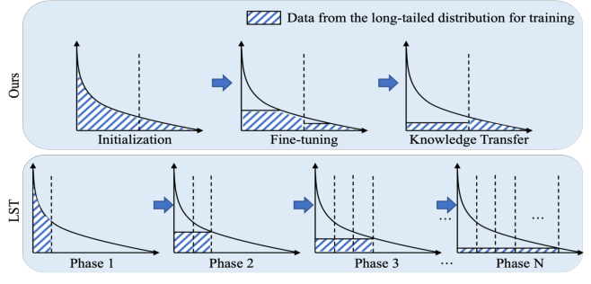
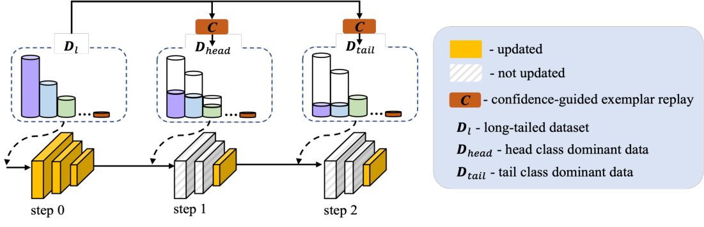
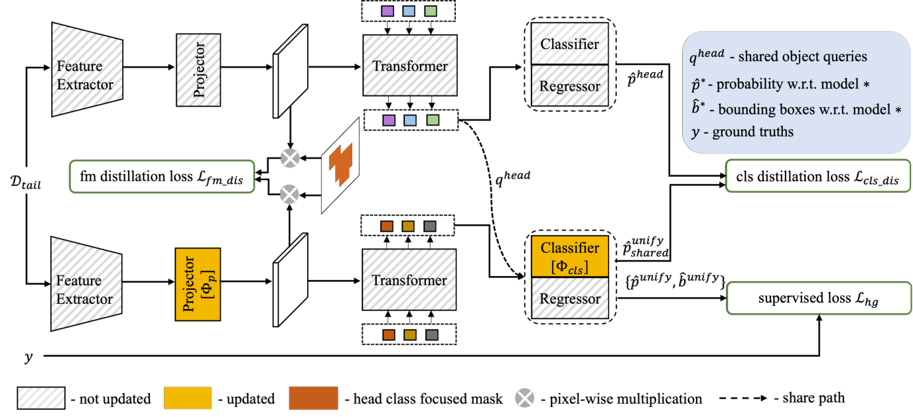

基于平滑尾部数据逐步学习的长尾目标检测增强方法
Na Dong, Yongqiang Zhang, Mingli Ding, Gim Hee Lee
现实数据往往呈现长尾分布，类别不平衡导致训练过程中头部类别主导模型，尾部类别性能严重退化。
长尾学习与类增量学习的本质区别：
所有类别的数据可以共存


使用预训练模型预测的分类分数排序，选择 top-scoring 实例作为代表性 exemplar。同时优先选择分数 > 0.5 且来自不同图像的实例，保证多样性。
Lcls：Sigmoid Focal Loss
Lbox：L1 + GIoU Loss
σ(i)：最优二分匹配索引
Head 类：每类 200 个实例（主导）
Tail 类：每类 30 个实例（辅助）
采用 Step-wise RFS 缓解子集内不平衡

使用 Head class focused binary mask：
mask 在 Head 类 GT 框内为 1，外部为 0
防止对 Tail 类学习产生负面影响
共享 Object Query 特征对齐预测：
qhead：Head expert 的 decoder 输出
直接共享给统一模型，避免 query 不匹配
λfm = 0.1，λcls = 1
LST、DropLoss、EQLv2、AHRL、BAGS、Seesaw Loss、EFL 等当前主流长尾目标检测方法。
| Method | AP | APr | APc | APf |
|---|---|---|---|---|
| LST | 22.6 | - | - | - |
| DropLoss | 25.1 | - | - | - |
| EQLv2 | 27.0 | - | - | - |
| AHRL | 27.4 | - | - | - |
| Baseline | 27.0 | 15.5 | 26.9 | 31.6 |
| Ours | 30.3 | 24.9 | 31.5 | 30.9 |
| Method | AP | APr | APc | APf |
|---|---|---|---|---|
| LST | 26.3 | - | - | - |
| DropLoss | 26.8 | - | - | - |
| EQLv2 | 28.1 | - | - | - |
| AHRL | 29.3 | - | - | - |
| Baseline | 27.0 | 14.6 | 27.3 | 31.7 |
| Ours | 30.7 | 26.8 | 31.7 | 31.1 |
| Method | AP | APr | APc | APf |
|---|---|---|---|---|
| BAGS | 26.0 | 17.2 | 24.9 | 31.1 |
| EQLv2 | 25.5 | 16.4 | 23.9 | 31.2 |
| Seesaw | 26.4 | 17.5 | 25.3 | 31.5 |
| EFL | 27.5 | 20.2 | 26.1 | 32.4 |
| Baseline | 25.1 | 11.9 | 23.1 | 33.2 |
| Ours | 28.7 | 21.8 | 28.4 | 32.0 |
| Method | Framework | AP |
|---|---|---|
| AHRL Baseline | Mask R-CNN | 26.7 |
| AHRL | Mask R-CNN | 27.4 |
| Our Baseline | Deformable DETR | 27.0 |
| Ours | Deformable DETR | 30.3 |
| Method | Framework | AP |
|---|---|---|
| EFL Baseline | RetinaNet | 25.7 |
| EFL | RetinaNet | 27.5 |
| Our Baseline | Deformable DETR | 25.1 |
| Ours | Deformable DETR | 28.7 |
| FT | KT | AP | APr | APc | APf |
|---|---|---|---|---|---|
| 27.0 | 15.5 | 26.9 | 31.6 | ||
| ✓ | 29.7 | 19.4 | 31.4 | 31.6 | |
| ✓ | 29.4 | 23.2 | 29.8 | 31.3 | |
| ✓ | ✓ | 30.3 | 24.9 | 31.5 | 30.9 |
| SOQ | Lfm | Lcls | AP | APr |
|---|---|---|---|---|
| ✓ | ✓ | 29.4 | 24.9 | |
| ✓ | ✓ | 29.7 | 25.0 | |
| ✓ | ✓ | 24.4 | 24.3 | |
| ✓ | ✓ | ✓ | 30.3 | 24.9 |
[1,30) ∪ [30,−) 取得最佳性能（30.3% AP）
多于两步的划分导致更严重的灾难性遗忘
| Nex Head | Nex Tail | AP | APr |
|---|---|---|---|
| 100 | 30 | 30.1 | 25.0 |
| 200 | 30 | 30.3 | 24.9 |
| 300 | 30 | 30.0 | 24.6 |
| 200 | 10 | 30.2 | 24.7 |
| 200 | 50 | 30.2 | 25.0 |
| Method | AP | APr |
|---|---|---|
| Ours w/o step-wise RFS | 29.6 | 19.0 |
| Ours | 30.3 | 24.9 |
本文提出了一种基于平滑尾部数据的逐步学习框架，通过预训练、微调和知识迁移三阶段策略，在长尾目标检测任务上取得了显著的性能提升，尤其在稀有类别上表现突出。
感谢观看